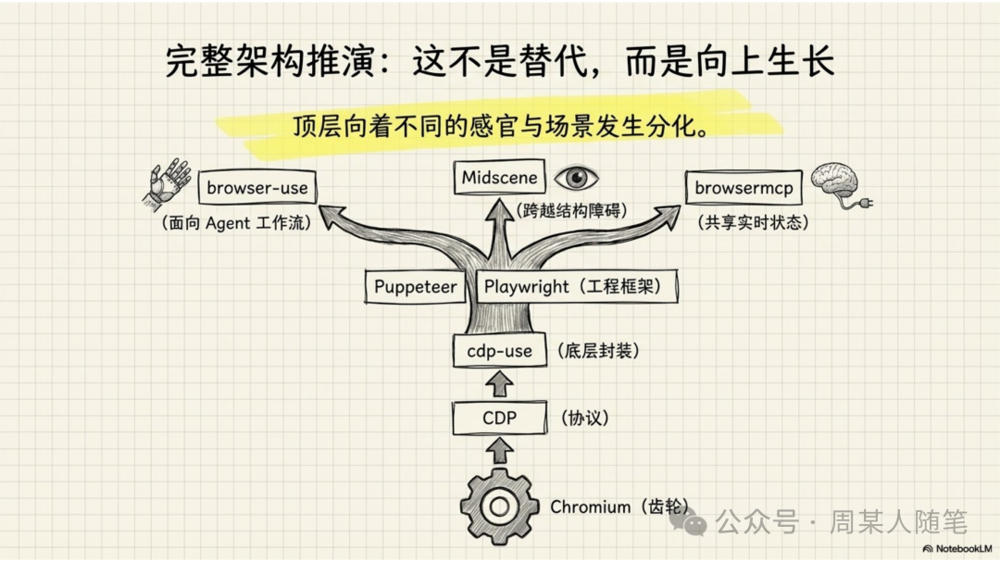
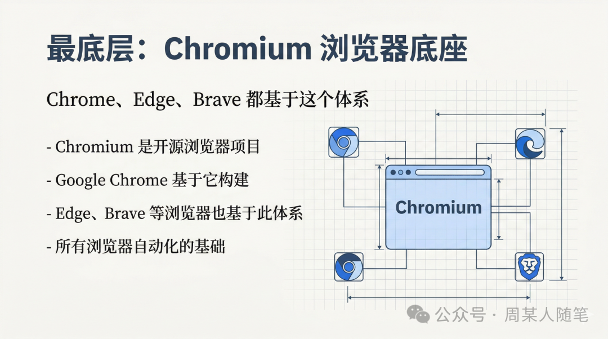
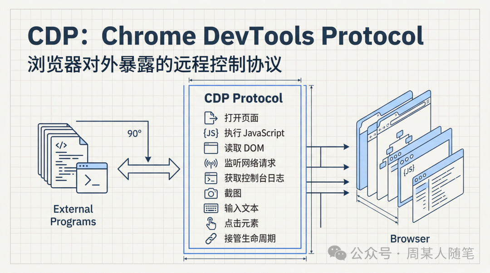
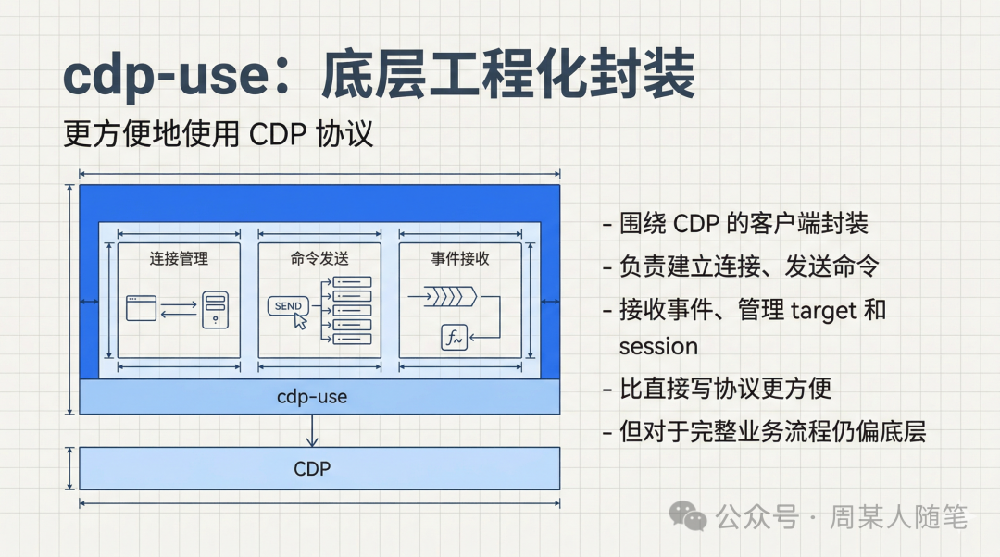
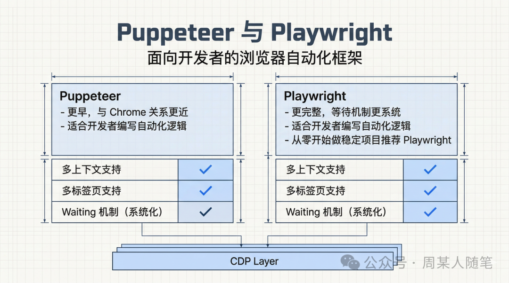
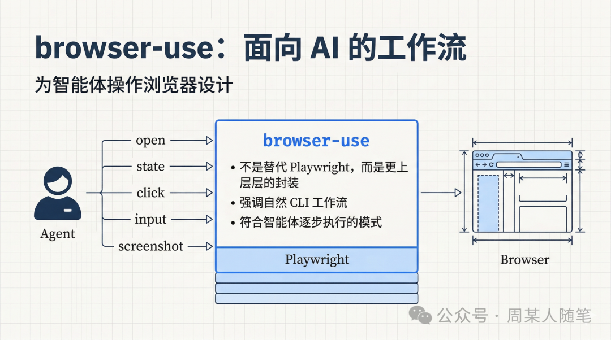
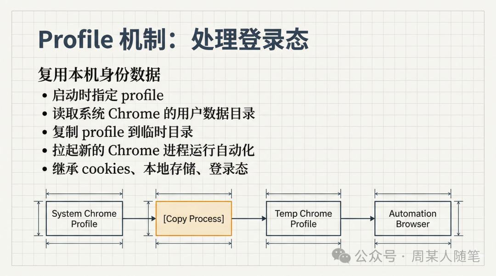
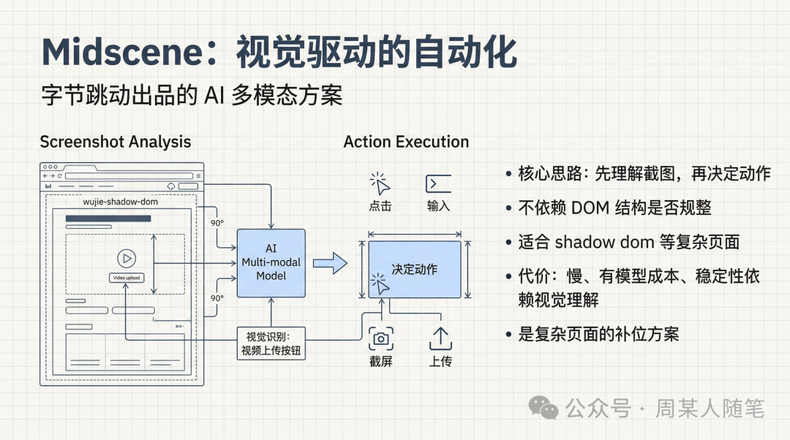
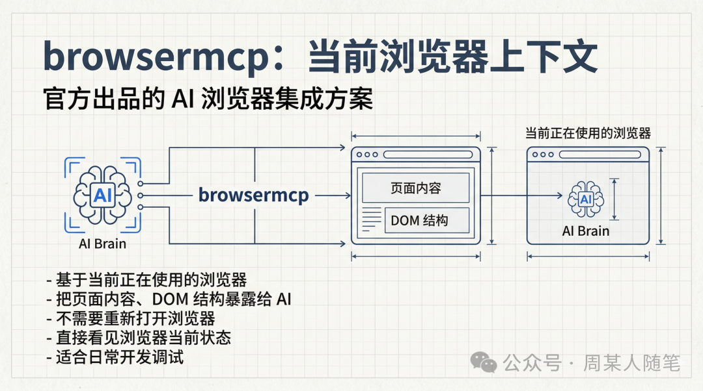
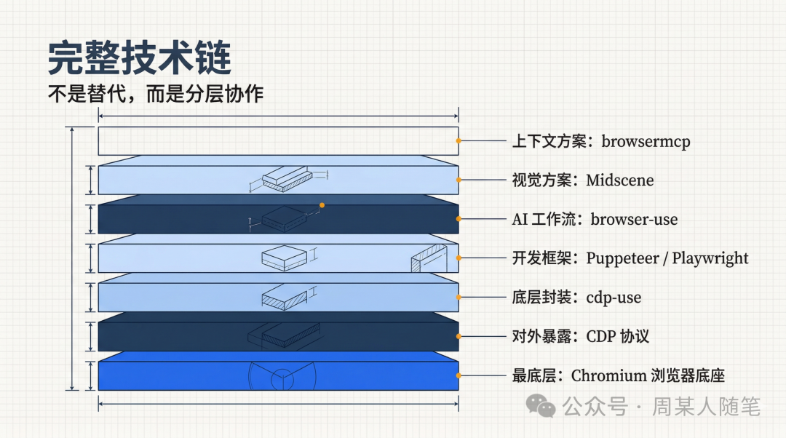

浏览器自动化技术栈全景：Chromium→CDP→Playwright→browser-use→Midscene/browsermcp 分层拆解
来源：微信公众号 归档日期：2026-04-26 抓取状态：成功 原文字符：5181｜配图：10 张
摘要速览
做 AI 操控浏览器类任务（多平台自动发布、后台抓取、网页操作 Agent）时，一堆工具名词混在一起分不清关系——到底该选 Playwright 还是 browser-use？遇到 shadow dom 为什么都失灵？browsermcp 和前面这些又是什么关系？这张卡把整条技术链从底到顶串清楚，给出每层的定位、代价和选型场景。
核心内容
1. 技术栈是逐层封装，不是谁替代谁
Chromium（浏览器底座：Chrome/Edge/Brave 都基于它）
└─ CDP（Chrome DevTools Protocol，浏览器对外的远程控制协议）
└─ cdp-use（贴近协议的底层客户端封装）
└─ Puppeteer / Playwright（面向开发者的工程化框架）
└─ browser-use（面向 AI Agent 的 CLI 工作流封装）
├─ Midscene（DOM 不够用时的视觉路线分支）
└─ browsermcp（接管当前浏览器上下文的分支）2. CDP 是所有路线的底层依赖：打开页面、执行 JS、读 DOM、监听网络、获取控制台日志、截图、输入、点击、接管 tab/target 生命周期——这些能力都是 Chromium 通过 CDP 开放出来的。
3. Playwright vs Puppeteer：Playwright 的等待机制、多上下文、多标签更完整，从零搭稳定自动化项目作者倾向 Playwright。Puppeteer 更早，和 Chrome 关系更近，入门人群多。
4. browser-use 的定位：不替代底层，是在 Playwright 之上再包一层，把浏览器能力整理成 open/state/click/input/upload/screenshot 这种适合智能体逐步调用的命令。做小红书/抖音这类后台上传型任务很顺。
5. browser-use 的 profile 机制（重要）：带 profile 启动时，它不接管你桌面上已打开的 Chrome，而是读取本机 Chrome 的用户数据目录，把对应 profile 复制到临时目录，拉起一个新的 Chrome 进程跑自动化——"克隆身份"而不是"接管会话"。profile 里沉淀的 cookies/本地存储/登录态够用于大部分后台场景；强设备指纹/严风控站点仍可能要求重新登录。
6. Midscene（字节 AI 视觉驱动）的核心差异：不是"先理解 DOM 再决定怎么点"，而是先看懂截图里发生了什么再决定下一步。处理 shadow dom（如视频号后台用了 wujie 的影子 DOM）这种常规选择器拿不到的场景时，视觉驱动直接绕过 DOM 结构问题。
Midscene 的代价：慢（多一层视觉理解）、有模型成本、稳定性来自视觉理解而非精确 DOM 选择器。强在跨结构理解，弱在精确定义和低成本重复执行，是复杂页面里的补位方案，不是主力。
7. browsermcp 的定位：官方 MCP，直接把你当前正在使用的浏览器的页面内容、DOM、操作能力暴露给 AI——不重新拉起浏览器，不重跑流程，AI 直接看到你此刻浏览器里的状态继续往下。适合日常写代码、排查问题、调试前端页面。当前短板：文件选择这类动作还不行。
8. 底层趋势：以前浏览器能力是给人点的、给开发者调试的；现在越来越多的能力直接为 AI 准备，或至少在快速变得更适合 AI 使用。
可执行启发
（待补充）
我的想法
（待补充）
思考方向提示：
- 本空间的 web-access skill 对标哪一层？ 现有 web-access 基于 CDP Proxy + curl API 调度用户日常 Chrome，等价于"browsermcp 路线 + 部分 browser-use 能力"——但文件上传是通过
/setFiles直接写 file input 解决的，比 browsermcp 的"文件选择还不行"要完整。这张卡其实反向证明了我们自建 skill 的技术路线选对了。 - Midscene 能否补位 web-access 的 shadow dom 短板？ web-access 在
/eval的递归遍历里已经处理了 Shadow DOM / iframe，但遇到 wujie 这种嵌套 shadow dom 时是否真能穿透？如果遇到视频号这类场景需要做 POC，Midscene 作为"视觉兜底层"值得试。 - profile 克隆 vs Proxy 直连的账号安全权衡：browser-use 的 profile 克隆相当于"用你的身份开新进程"，web-access 是"直接在你原 Chrome 里开后台 tab"。前者可能更不容易被识别为自动化（独立进程+独立 user-data-dir），后者风控风险更高但免去数据同步成本。后续若要做矩阵发布这种高频动作，可能要走 profile 克隆路线。
为什么有用
之前本空间已有 20260407-dev-browser与web-access浏览器Skill对比 卡（讨论 Claude Code 内两个 Skill 的取舍），那张是"Claude Code 生态内"视角；这张是"整个浏览器自动化技术栈"的上游全景，两张卡互补。
对你做多平台视频/内容同步发布、Hermes/Generic Agent 类自研 Agent 接入浏览器、web-access skill 迭代时的选型评估有直接指导价值——不用每次遇到 shadow dom / 登录态 / 当前浏览器接管问题再重新查一遍这些名词的关系。
具体步骤（按场景选型）
| 场景 | 推荐方案 | 原因 |
|---|---|---|
| 常规后台上传（小红书/抖音） | browser-use + profile 克隆 | AI 友好的 CLI 动作，登录态自带 |
| shadow dom / wujie / 非常规结构（视频号） | Midscene 视觉驱动 | 绕开 DOM 选择器问题 |
| 接管当前浏览器上下文（调试/排查） | browsermcp | 看到你此刻页面状态 |
| 从零搭稳定自动化项目（非 AI） | Playwright | 等待机制/多上下文最完整 |
| 需要极致精细控制/性能 | cdp-use 或直接 CDP | 心智负担高，但最灵活 |
适用 / 不适用场景
- 适用：选型浏览器自动化方案、做 AI 操控浏览器类 Skill、解释这几个名词的关系给别人听、遇到 shadow dom 类问题时决定升级到视觉路线
- 不适用：想要每个工具的详细 API 教程（这张只讲定位和关系，不讲怎么用 API）
原文：逆向OneByOne（微信公众号）
编者荐语： "浏览器自动化技术栈基于Chromium/CDP逐层封装：Playwright处理常规DOM操作，browser-use适配AI工作流，Midscene攻克复杂页面，browsermcp连接当前上下文。它们共同构成应对不同场景的互补方案。"
cdp到底是什么？browser-use和Playwright到底是什么关系？browsermcp又是干吗的？如果我想让AI来操作我的浏览器，比如自动发布视频至各大平台，过程中遇到登录态怎么办？页面结构中遇到shadow dom，也就是影子dom，这种普通自动化工具抓不到、点不动的页面结构，该怎么解决？
最近正好在做一个多平台同步发布视频的自动化skill，小红书和抖音整体还算顺，把发布流程拆清楚之后，让它用browser-use去执行，基本就能跑起来。真正卡住的，是视频号。
因为视频号后台里有一部分页面用了wujie的shadow dom结构，你从视觉上看，那个发表视频按钮明明就在页面上，但很多基于DOM的自动化工具就是拿不到。
因为之前做过一些RPA相关的项目，知道字节有一套基于AI多模态的方案，是Midscene，后来就换成了它。它本质上不是先理解底层dom结构，再决定怎么点，而是先去理解页面截图里到底有什么，什么元素在什么位置，知道位置后就可以利用底层操作浏览器的工具去执行了。
整个过程我发现这里其实还是有很多概念和术语的，就想着把这些从底层到最上层都整理一下，并分享给大家。
最底层依赖的是Chromium。你可以把Chromium理解成一个浏览器底座，Google Chrome是基于它做出来的，Edge、Brave这些浏览器，本质上也都在这个体系里。所以当我们说浏览器自动化的时候，很多时候我们真正操作的，并不是某个网页本身，而是这个Chromium系浏览器对外暴露出来的一套能力。
这套能力里最核心的一个东西，就是cdp。cdp的全称叫Chrome DevTools Protocol，你可以把它理解成浏览器对外开放的一套远程控制协议。通过这套协议，外部程序可以让浏览器做很多事情，比如打开页面、执行JavaScript、读取DOM、监听网络请求、获取控制台日志、截图、输入文本、点击元素，甚至接管tab和target的生命周期。
那有了接口之后，下一步自然就是，得有人把它更方便地用起来。于是就有了像cdp-use这种东西。你可以把cdp-use理解成一个更贴近cdp协议本身的客户端封装，它负责建立连接、发送命令、接收事件、管理target和session。这个层级已经比直接手写协议好了很多，但它还是偏底层，真要拿它去写完整的业务流程，细节会很多，心智负担也会比较重。
再往上，才是Puppeteer和Playwright这种更高层的浏览器自动化框架。Puppeteer更早一些，和Chrome、Chromium这条线的关系也更近，所以很多人第一次接触浏览器自动化，就是从它开始的。Playwright则更完整一点，等待机制、多上下文、多标签这些能力也更系统，所以如果今天是从零开始做一个稳定的自动化项目，我自己的倾向还是Playwright。你可以粗暴理解成，它们都是比cdp-use更高一层的工程化封装，只不过在成熟度和使用体验上，各自的重心不太一样。
那browser-use又是什么？browser-use不是要替代Playwright，也不是要替代cdp，它更像是在更上面再包了一层，专门为了AI和Agent这种使用方式，设计出了一套更自然的CLI工作流。它想解决的问题不是浏览器能不能点，而是AI该怎么更顺手地操作浏览器。你会看到它强调的就是open、state、click、input、upload、screenshot这些动作，本质上是在把复杂的浏览器能力，整理成一组更适合智能体逐步调用的命令。
这也是为什么，用browser-use去做小红书、抖音这类后台上传型任务，其实会很顺。AI先open页面，再state看元素，再click上传，再input标题和内容，最后screenshot给人确认，整个流程非常符合Agent逐步执行的方式。而且它在处理身份问题上也很实用，如果你带着profile去启动，它会去找系统里安装的Chrome，读取你本机的用户数据目录和profile信息，把对应profile复制到一个临时目录里，再拉起一个新的Chrome进程来跑自动化。它不是接管你现在桌面上已经打开着的那个Chrome窗口，而是拿你的身份数据，克隆出一个自动化专用的Chrome。
而这个profile里已经沉淀下来的cookies、本地存储和登录态数据。当然这也不是绝对百分之百，如果某个平台特别依赖设备指纹，或者做了更严格的风控校验，又或者你的登录信息没有真正持久化到profile里，它还是有可能要求重新确认登录，但大部分普通后台场景，这条路是能走通的。
大部分场景基于browser-use和Playwright就可以做到了，但是像视频号后台页面采用的是shadow dom，browser-use总是会出现问题，总是找不到对应的节点。
这时候就会进入另一条路线，也就是Midscene这种视觉驱动方案（它是字节出的一款基于AI视觉驱动的UI自动化框架）。它的核心思路，不是先理解DOM，再决定怎么点，而是先看懂截图里到底发生了什么，再决定下一步动作。这样一来，像点击发表视频按钮、在描述框输入这段话这种指令，就不必过分依赖底层DOM结构是不是规整，是不是能被常规选择器稳定拿到。这也是为什么，在视频号这种影子dom比较重的场景里，Midscene会比纯DOM自动化更靠谱一些。
但Midscene也不是银弹。它的代价很明确，第一是慢，因为中间多了一层视觉理解；第二是有模型成本，不像纯DOM自动化那样便宜；第三是它的稳定性更多来自视觉理解，而不是来自一个绝对精确、可预测的DOM选择器。换句话说，它强在跨结构理解，但弱在精确定义和低成本重复执行，所以更像是一种在复杂页面里的补位方案。
前面说的这些，不管是browser-use，还是Playwright、Midscene，本质上大多都还是重新拉起一个浏览器，或者重新跑一个自动化进程。那如果我现在正在用一个浏览器，我就想让AI直接看到我当前这个浏览器里正在发生什么，并且顺着这个上下文继续操作，有没有办法？其实也有，就是官方出的browsermcp。
它可以基于你当前正在使用的浏览器，把页面内容、DOM结构和可操作能力，更自然地暴露给AI。这样一来，AI不需要每次都重新打开一个浏览器，也不用把整个流程从头再跑一遍，而是可以直接看见你此刻浏览器里是什么状态，再继续往下操作。这个对于日常写代码、排查问题、调试前端页面，其实会方便很多。
当然，browsermcp现在也不是完美的。它的核心优势是更贴近你当前正在使用的浏览器，对当前上下文更友好，对DOM结构的理解和操作也更自然。但它现在的能力还没有强到覆盖所有场景，比如像文件选择这类动作，现在还不行。
所以把这些东西全串起来之后，你会发现，它们不是谁替代谁的关系，而是一条逐层往上长出来的技术链。最底层，是Chromium这样的浏览器底座；它对外暴露的核心控制能力，是cdp；围绕cdp，又有了像cdp-use这样的底层工程化封装；再往上，才是Puppeteer和Playwright这种更适合开发者写自动化逻辑的框架；再往上，才轮到browser-use这种面向智能体工作流的封装；而当DOM这条路不够用了，又会分出Midscene这种视觉路线，或者browsermcp这种更贴近当前浏览器上下文的路线，去补不同方向的短板。
以前很多浏览器能力，是给人点的，是给开发者调试的。现在越来越多的能力，开始直接为AI准备，或者至少在快速变得更适合AI使用。
原文沉淀

cdp到底是什么？browser-use和Playwright到底是什么关系？browsermcp又是干吗的？如果我想让AI来操作我的浏览器，比如自动发布视频至各大平台，过程中遇到登录态怎么办？页面结构中遇到shadow dom，也就是影子dom，这种普通自动化工具抓不到、点不动的页面结构，该怎么解决？
最近正好在做一个多平台同步发布视频的自动化skill，小红书和抖音整体还算顺，把发布流程拆清楚之后，让它用browser-use去执行，基本就能跑起来。真正卡住的，是视频号。
因为视频号后台里有一部分页面用了wujie的shadow dom结构，你从视觉上看，那个发表视频按钮明明就在页面上，但很多基于DOM的自动化工具就是拿不到。
因为之前做过一些RPA相关的项目，知道字节有一套基于AI多模态的方案，是Midscene，后来就换成了它。它本质上不是先理解底层dom结构，再决定怎么点，而是先去理解页面截图里到底有什么，什么元素在什么位置，知道位置后就可以利用底层操作浏览器的工具去执行了。
整个过程我发现这里其实还是有很多概念和术语的，就想着把这些从底层到最上层都整理一下，并分享给大家。
最底层依赖的是Chromium。你可以把Chromium理解成一个浏览器底座，Google Chrome是基于它做出来的，Edge、Brave这些浏览器，本质上也都在这个体系里。所以当我们说浏览器自动化的时候，很多时候我们真正操作的，并不是某个网页本身，而是这个Chromium系浏览器对外暴露出来的一套能力。

这套能力里最核心的一个东西，就是cdp。cdp的全称叫Chrome DevTools Protocol，你可以把它理解成浏览器对外开放的一套远程控制协议。通过这套协议，外部程序可以让浏览器做很多事情，比如打开页面、执行JavaScript、读取DOM、监听网络请求、获取控制台日志、截图、输入文本、点击元素，甚至接管tab和target的生命周期。

那有了接口之后，下一步自然就是，得有人把它更方便地用起来。于是就有了像cdp-use这种东西。你可以把cdp-use理解成一个更贴近cdp协议本身的客户端封装，它负责建立连接、发送命令、接收事件、管理target和session。这个层级已经比直接手写协议好了很多，但它还是偏底层，真要拿它去写完整的业务流程，细节会很多，心智负担也会比较重。

再往上，才是Puppeteer和Playwright这种更高层的浏览器自动化框架。Puppeteer更早一些，和Chrome、Chromium这条线的关系也更近，所以很多人第一次接触浏览器自动化，就是从它开始的。Playwright则更完整一点，等待机制、多上下文、多标签这些能力也更系统，所以如果今天是从零开始做一个稳定的自动化项目，我自己的倾向还是Playwright。你可以粗暴理解成，它们都是比cdp-use更高一层的工程化封装，只不过在成熟度和使用体验上，各自的重心不太一样。

那browser-use又是什么？browser-use不是要替代Playwright，也不是要替代cdp，它更像是在更上面再包了一层，专门为了AI和Agent这种使用方式，设计出了一套更自然的CLI工作流。它想解决的问题不是浏览器能不能点，而是AI该怎么更顺手地操作浏览器。你会看到它强调的就是open、state、click、input、upload、screenshot这些动作，本质上是在把复杂的浏览器能力，整理成一组更适合智能体逐步调用的命令。

这也是为什么，用browser-use去做小红书、抖音这类后台上传型任务，其实会很顺。AI先open页面，再state看元素，再click上传，再input标题和内容，最后screenshot给人确认，整个流程非常符合Agent逐步执行的方式。而且它在处理身份问题上也很实用，如果你带着profile去启动，它会去找系统里安装的Chrome，读取你本机的用户数据目录和profile信息，把对应profile复制到一个临时目录里，再拉起一个新的Chrome进程来跑自动化。它不是接管你现在桌面上已经打开着的那个Chrome窗口，而是拿你的身份数据，克隆出一个自动化专用的Chrome。

而这个profile里已经沉淀下来的cookies、本地存储和登录态数据。当然这也不是绝对百分之百，如果某个平台特别依赖设备指纹，或者做了更严格的风控校验，又或者你的登录信息没有真正持久化到profile里，它还是有可能要求重新确认登录，但大部分普通后台场景，这条路是能走通的。
大部分场景基于browser-use和Playwright就可以做到了，但是像视频号后台页面采用的是shadow dom，browser-use总是会出现问题，总是找不到对应的节点。
这时候就会进入另一条路线，也就是Midscene这种视觉驱动方案（它是字节出的一款基于AI视觉驱动的UI自动化框架）。它的核心思路，不是先理解DOM，再决定怎么点，而是先看懂截图里到底发生了什么，再决定下一步动作。这样一来，像点击发表视频按钮、在描述框输入这段话这种指令，就不必过分依赖底层DOM结构是不是规整，是不是能被常规选择器稳定拿到。这也是为什么，在视频号这种影子dom比较重的场景里，Midscene会比纯DOM自动化更靠谱一些。

但Midscene也不是银弹。它的代价很明确，第一是慢，因为中间多了一层视觉理解；第二是有模型成本，不像纯DOM自动化那样便宜；第三是它的稳定性更多来自视觉理解，而不是来自一个绝对精确、可预测的DOM选择器。换句话说，它强在跨结构理解，但弱在精确定义和低成本重复执行，所以更像是一种在复杂页面里的补位方案。
前面说的这些，不管是browser-use，还是Playwright、Midscene，本质上大多都还是重新拉起一个浏览器，或者重新跑一个自动化进程。那如果我现在正在用一个浏览器，我就想让AI直接看到我当前这个浏览器里正在发生什么，并且顺着这个上下文继续操作，有没有办法？其实也有，就是官方出的browsermcp。

它可以基于你当前正在使用的浏览器，把页面内容、DOM结构和可操作能力，更自然地暴露给AI。这样一来，AI不需要每次都重新打开一个浏览器，也不用把整个流程从头再跑一遍，而是可以直接看见你此刻浏览器里是什么状态，再继续往下操作。这个对于日常写代码、排查问题、调试前端页面，其实会方便很多。
当然，browsermcp现在也不是完美的。它的核心优势是更贴近你当前正在使用的浏览器，对当前上下文更友好，对DOM结构的理解和操作也更自然。但它现在的能力还没有强到覆盖所有场景，比如像文件选择这类动作，现在还不行。
所以把这些东西全串起来之后，你会发现，它们不是谁替代谁的关系，而是一条逐层往上长出来的技术链。最底层，是Chromium这样的浏览器底座；它对外暴露的核心控制能力，是cdp；围绕cdp，又有了像cdp-use这样的底层工程化封装；再往上，才是Puppeteer和Playwright这种更适合开发者写自动化逻辑的框架；再往上，才轮到browser-use这种面向智能体工作流的封装；而当DOM这条路不够用了，又会分出Midscene这种视觉路线，或者browsermcp这种更贴近当前浏览器上下文的路线，去补不同方向的短板。

以前很多浏览器能力，是给人点的，是给开发者调试的。现在越来越多的能力，开始直接为AI准备，或者至少在快速变得更适合AI使用。
归属：[[02-输入/按主题/工具与技术/_index|工具与技术]]